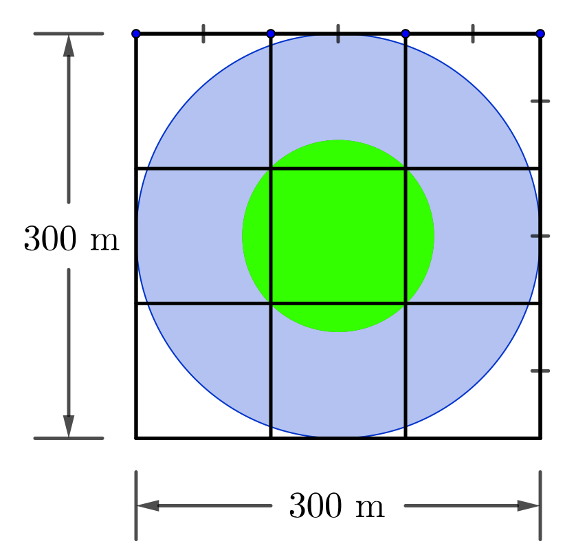
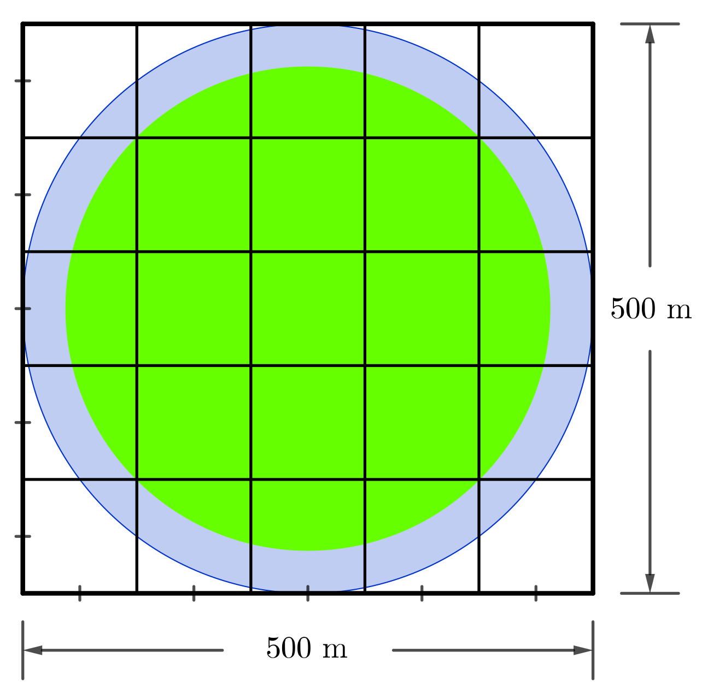

Problem
Two parks in Yourtown have very unique but similar designs, which are illustrated in the following diagrams.
 
The smaller park can be completely enclosed by a square that is \(300\) m by \(300\) m. The larger park can be completely enclosed by a square that is \(500\) m by \(500\) m.
On each drawing, there are horizontal and vertical lines, each spaced \(100\) m apart. These lines create identical \(100\) m by \(100\) m squares, nine squares on the drawing of the smaller park and twenty-five squares on the drawing of the larger park.
The drawing for each park also shows two concentric circles. The circumference of the outer circle touches each of the four sides of the square enclosing the park. The circumference of the inner circle passes through the four vertices of the largest square created by the gridlines that are totally inside the park. (In the smaller park, this largest square is the single square in the centre of the grid. In the larger park, this largest square is formed by the nine squares in the centre of the grid.)
The ring created between the outer circle and inner circle in each park is completely filled with water to a uniform depth of \(0.5\) m.
Which of the two waterways contains more water?
Solution
To find the volume of water in each waterway we need to find the top area of each waterway and multiply that by the depth of the water. Since the depth of the water in each waterway is the same and is constant, we need only compare the top areas to determine which one is larger.
For the waterway in the smaller park, let the diameter of the inner circle be \(d_1\), the diameter of the larger circle be \(D_1\), the radius of the inner circle be \(r_1\) and the radius of the larger circle be \(R_1\).
For the waterway in the larger park, let the diameter of the inner circle be \(d_2\), the diameter of the larger circle be \(D_2\), the radius of the inner circle be \(r_2\) and the radius of the larger circle be \(R_2\).
The calculations for the parks are shown.
Smaller Park
The diameter of the inner circle is the length of the diagonal of the contained \(100\) m by \(100\) m square. Using the Pythagorean Theorem,
\[\begin{aligned} d_1&=\sqrt{100^2+100^2}\\ &=\sqrt{20\,000}\\ &=\sqrt{(10\,000)(2)}\quad *\\ &=100\sqrt{2}\text{ m}\\ r_1&=\frac{1}{2}d_1\\ &=50\sqrt{2}\text{ m}\end{aligned}\]
Larger Park
The diameter of the inner circle is the length of the diagonal of the contained \(300\) m by \(300\) m square. Using the Pythagorean Theorem,
\[\begin{aligned} d_2&=\sqrt{300^2+300^2}\\ &=\sqrt{180\,000}\\ &= \sqrt{(90\,000)(2)}\quad *\\ &=300\sqrt{2}\text{ m}\\ r_2&=\frac{1}{2}d_2\\ &=150\sqrt{2}\text{ m}\end{aligned}\]
Smaller Park
The diameter of the outer circle is the width of the \(300\) m by \(300\) m square. It follows that
\[\begin{aligned} D_1&=300\text{ m}\\ R_1&=\frac{1}{2}D_1\\ &=150\text{ m}\end{aligned}\]
Larger Park
The diameter of the outer circle is the width of the \(500\) m by \(500\) m square. It follows that
\[\begin{aligned} D_2&=500\text{ m}\\ R_2&=\frac{1}{2}D_2\\ &=250\text{ m}\end{aligned}\]
The top area of each waterway can be determined by subtracting the area of the inner circle from the area of the outer circle in each case.
Let \(A_1\) be the top area of the smaller park’s waterway and \(A_2\) be the top area of the larger park’s waterway.
Smaller Park
\[\begin{aligned} A_1&=\pi (R_1)^2 - \pi (r_1)^2\\ &=\pi (150)^2-\pi (50\sqrt{2})^2\\ &=22500\pi-5000\pi\\ &=17500\pi \text{ m}^2\end{aligned}\]
Larger Park
\[\begin{aligned} A_2&=\pi (R_2)^2 - \pi (r_2)^2\\ &=\pi (250)^2-\pi (150\sqrt{2})^2\\ &=62500\pi-45000\pi\\ &=17500\pi \text{ m}^2\end{aligned}\]
This may be a surprising result. Both waterways have equal top areas. Since the depths of the waterways are equal and uniform, the volume of water in each waterway will be the same. Neither waterway contains more water than the other waterway.
For Further Thought:
A third medium sized park can be completely enclosed by a \(400\) m by \(400\) m square. If a waterway were constructed in a similar manner to the waterways in the other two parks, how would the volume of the water in this third waterway compare to the volume of water in the other two waterways? Can you explain what is happening here?
* We reduced the radicals by factoring out the largest perfect square, and then finding the square root of that perfect square. Here is a simpler example: \(\sqrt{20}= \sqrt{(4)(5)} = \sqrt{4}\sqrt{5} = 2 \sqrt{5}\).